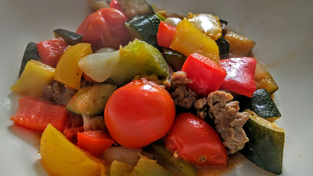

Mediterranean vegetables with lamb
Ingredients
- 1 tbsp olive oil
- 250 g lean lamb fillet, trimmed of fat and thinly sliced
- 140 g shallots, halved
- 2 large courgettes, cut into chunks
- 1/2 tsp ground cumin
- 1/2 tsp paprika
- 1/2 tsp ground coriander
- 1 red, 1 orange, 1 green pepper, deseeded and cut into chunks
- 1 garlic clove, sliced
- 150 ml vegetable stock
- 250 g cherry tomatoes
- freshly chopped coriander leaves
Instructions
- Heat the oil in a large frying pan. Cook the lamb and shallots over a high heat for 2-3 minutes until golden.
- Add the courgettes and stir-fry for 3-4 minutes until they begin to soften.
- Add the spices and toss well, then add the peppers and garlic. Reduce the heat and cook over a moderate heat for 4-5 minutes until the peppers begin to soften.
- Pour in the stock and stir to coat. Add the tomatoes, season, then cover with a lid and simmer for 15 minutes, stirring occasionally until the vegetables are tender.
- Stir through the coriander to serve.
Source
BBC Good Food: One-pot DishesShort URL Long URL Print